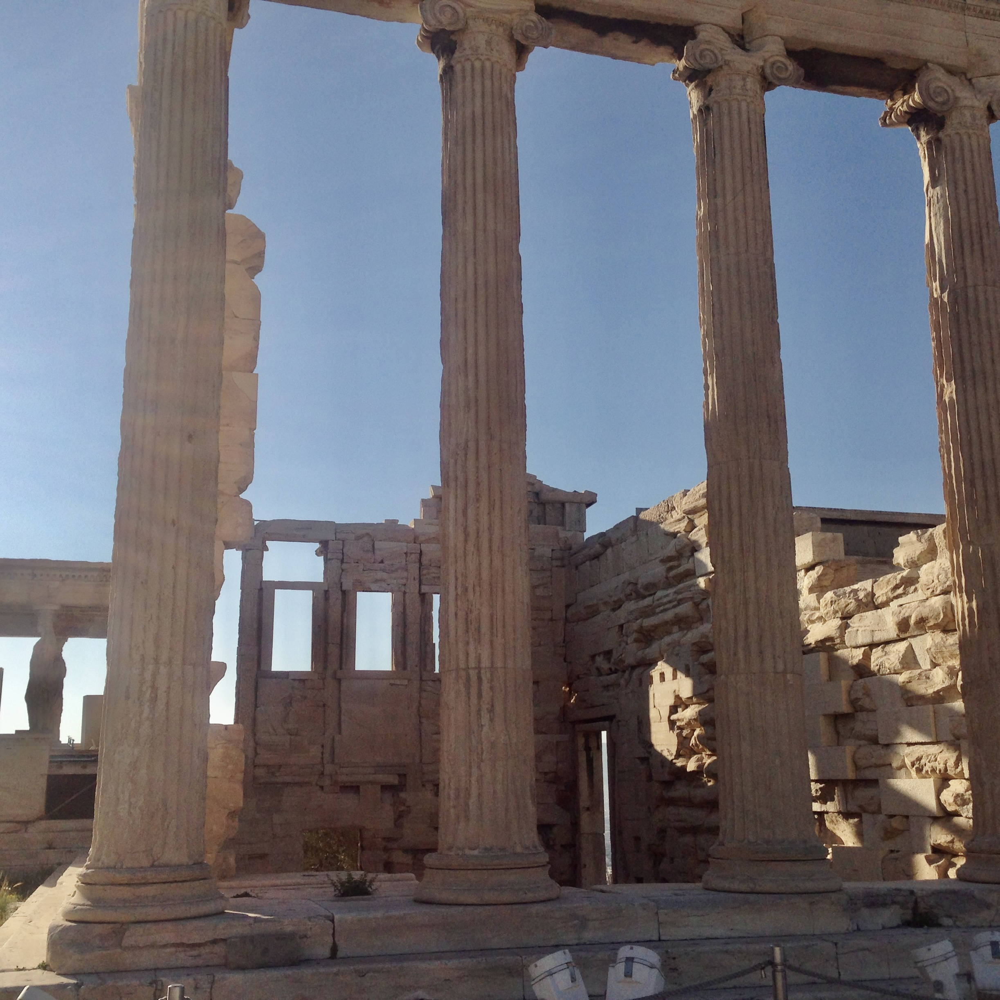
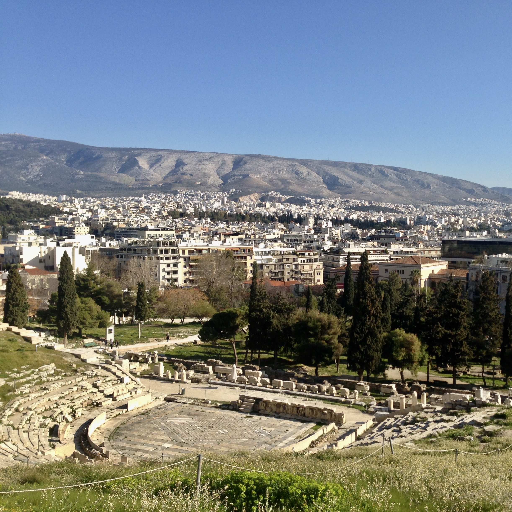
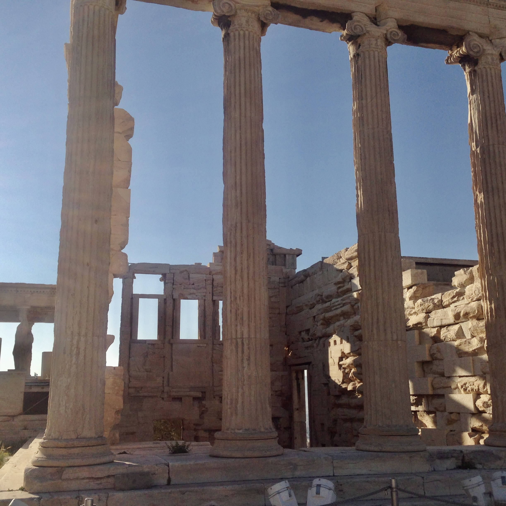
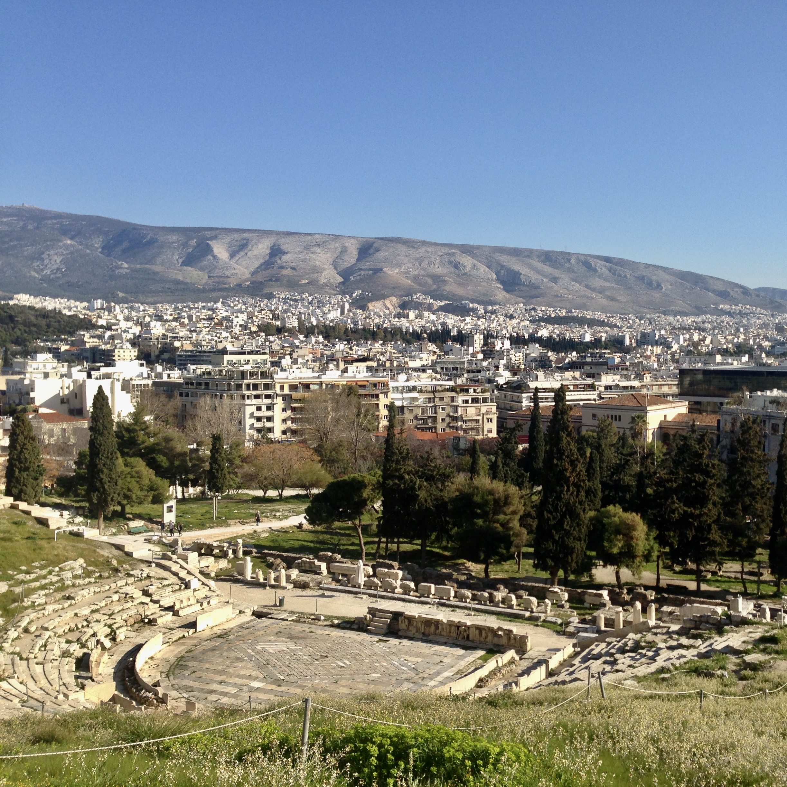

Explore the Foundations of Ancient Athens.

3-4 hours
Acropolis, Ancient Agora
Acropolis Metro Station

 



Explore the Foundations of Ancient Athens.
Follow a walking route that connects two of the most important archaeological sites in Athens: the Acropolis and the Ancient Agora. This route offers a detailed look into the religious, political, and civic life of ancient Athens, showcasing some of the most significant monuments of the classical world.
Begin your visit at the Acropolis of Athens, the city’s religious center and a defining symbol of classical Greece. As you ascend the southern slope, the first major sanctuary you encounter is the Theatre of Dionysus, one of the earliest theaters in the world and central to the development of ancient Greek drama. Nearby is the Odeon of Herodes Atticus, a Roman odeon still used today for concerts and cultural events.
At the western end of the hill, you’ll enter the Acropolis through the Propylaia, a monumental marble gateway. From this vantage point, you can admire the Temple of Athena Nike, a small Ionic temple dedicated to the victory over the Persians. Further ahead stands the Erechtheion, a temple known for its distinctive architectural form and the Porch of the Caryatids—six sculpted female figures that support its southern portico. The Erechtheion was dedicated to both Athena and Poseidon.
The most prominent structure on the Acropolis is the Parthenon, a large Doric temple built in the 5th century BCE in honor of Athena, the city’s patron goddess. It exemplifies the architectural and artistic achievements of the classical period and remains one of the most recognized monuments of ancient Greece.
From the Acropolis, follow the path downhill toward the Ancient Agora, located at the northwest base of the hill. In antiquity, the Agora functioned as the civic and commercial center of Athens, where citizens gathered to discuss politics, trade goods, and take part in legal proceedings.The most prominent structure on the Acropolis is the Parthenon, a large Doric temple built in the 5th century BCE in honor of Athena, the city’s patron goddess. It exemplifies the architectural and artistic achievements of the classical period and remains one of the most recognized monuments of ancient Greece.
Private Walking Tour
Entrance fees to venues
If you have any questions or would like to book this tour, feel free to reach out:
Email: elisavetmakri@hotmail.com
Phone: +30 69429190805